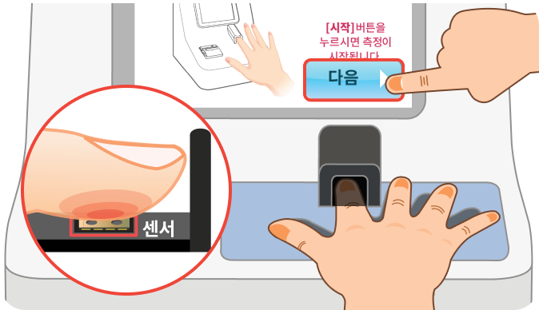
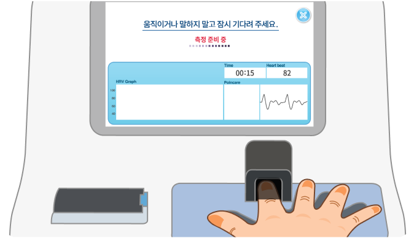
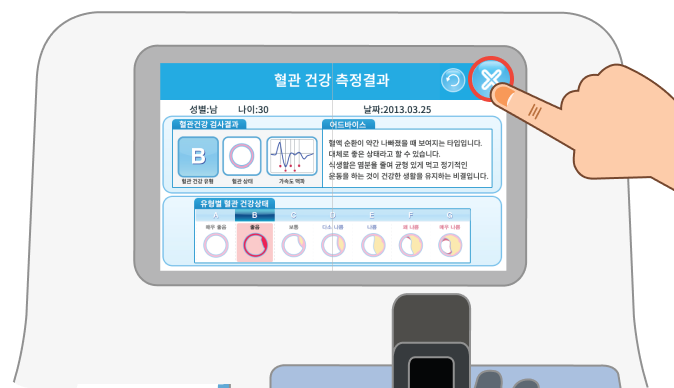

-
1.측정 시작
 [다음]버튼을 누르고 손가락의 첫마디를
센서 위에 올려주세요.
(센서에 빛이 들어가지 않도록 해주세요.) -
2.측정
 측정이 시작되면 움직이거나 말하지 마시고
바른자세로 측정해주세요.
(측정시간은 1분입니다.) -
3.측정 완료
 표시된 측정 결과를 확인하고
오른쪽 윗부분에 있는 X 버튼을 눌러 측정을 종료합니다.
[다음]버튼을 누르고 손가락의 첫마디를
센서 위에 올려주세요.
(센서에 빛이 들어가지 않도록 해주세요.)
측정이 시작되면 움직이거나 말하지 마시고
바른자세로 측정해주세요.
(측정시간은 1분입니다.)
표시된 측정 결과를 확인하고
오른쪽 윗부분에 있는 X 버튼을 눌러 측정을 종료합니다.